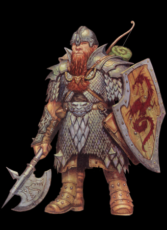

|
|
|
DWARF |
| |
|  |
드워프(Dwarf) - Stout and Tough, front-line Warrior
드워프는 강력한 전투기술, 대지의 비밀에 대한 지식,
물리/마법적인 고통에 대한 강인한 저항력, 그리고 엄청난 주량으로 유명하다.
좀 무뚝뚝한 면이 있으며 황금, 보석, 장신구, 귀금속 공예품을
소중히 여기는 까닭에 탐욕스러운 걸로 알려지기도 한다.
그리고 그들의 왕국은 잘 알려진대로 산속 깊숙한 지하의 암반을 기반으로
펼쳐져 있으며 근처엔 항상 황금과 보석, 귀금속 광산이 존재한다.
드워프들은 전부 수염을 길게 기르고 있는걸 볼 수 있는데
드워프 남성에게 있어 수염은 아주 소중한 것 이기 때문이다.
그렇기 때문에 아주 소중히 조심스레 관리한다.
나이 40세가 되면 성인으로 여기며 보통 수명은 400세 이상이다.
드워프는 놈(Gnome)들과 가깝게 지내며 인간이나 하플링과는
적당히 관계를 유지한다. 드워프들이 말하길 "그냥 알고 지내는것과 친구의
사이엔 100년의 차이가 있다"고 한다.
인간은 수명이 짧아서 드워프와 어울리긴 좀 힘들지만 조부모나 부모때
부터 알고 지내는 경우 그들의 후손과 드워프가 친하게 지내기도 한다.
엘프들을 예측불가에, 변덕스럽고, 경솔하다고 여기며
탐탁찮게 생각하는 편인데 오크나 놀, 고블린과의(드워프나 엘프나 적으로 여기는 공공의 적)
전투시엔 서로 연합하는 경우가 제법 많다.
그럴 땐 마지못해 엘프들을 존중 해 주기도 한다.
하프오크와는 서로 신용하지 않는 편인데 서로 활약을 통해서
인정받고 인정해주는 경우도 가끔씩은 있다.
타지에서의 드워프는 보통 대장장이, 보석상, 용병으로 주로 활동하며
드워프 경호원은 용감하고 충성심 강하기로 유명하며 많은 보수를 받는다.
드워프의 모험의 동기는 여러가지가 있지만 그 업적이
자신의 부족에게 명예가 된다면 존경과 지위를 받는다. 드워프들에게 존경을
받는 가장 확실한 방법은 자이언트를 물리치고 강력한 마법무기를 입수 하는 것이다.
스탯 (스탯만 놓고 보면 저주 받은 클래스. 전 클래스중 최악.)
| |
1p |
2p |
| 영문판 이름 |
Dimsdale |
Hendel |
| 일본판 이름 |
ディムズディル(딤스데일) |
ヘンデル (헨델) |
| 초기레벨 |
10 |
나이 |
60 |
| Strength |
11 |
Dexterity |
9 |
| Constitution |
12 |
Intelligence |
8 |
| Wizdom |
10 |
Charisma |
10 |
|
|
| |
게임에서의 특징
공격속도와 무기 투척 속도가 비교적 느리고 공격 스타일이 타 클래스와 꽤 다르기 때문에
초보자가 다루기엔 조금 난해한 면이 있습니다.
그러나 콤보가 단순하면서도 상당히 강력하기 때문에 적들을 빠르게 제압할 수 있습니다.
- 투핸디드 소드, 스태프류, 완드류를 제외한 모든 무기의 사용이 가능합니다.
- 최대 12레벨까지 오릅니다. 따라서 라이트닝 볼트 반지 같은 마법 아이템의 위력이 타 클래스 보다 약한 편 입니다.
- 상자를 직접 열고 잠시 남아 있는 상자를 부수면 돈이 나옵니다. 가끔 다른 아이템이 나오는 상자도 있습니다.
- 괴물들의 문자를 읽을 수 있습니다.
- 아이템 창의 가드 커맨드를 이용해 가드 할 수 있습니다.
- 초반 부터 전 클래스 중 가장 높은 HP를 자랑합니다.
- 화살을 제외한 모든 투척무기의 투척 속도가 전 클래스중 가장 느립니다(화살은 가장 빠릅니다).
- 키가 작다는 점 때문에 서 있다 하더라도 적의 화살공격이 안맞으며 단검/화살로 고블린을 맞출 수 있습니다.
- 대부분의 공격이 2히트를 하는데 그로 인해 1히트당 데미지는 타 클래스의 같은 무기 데미지보다 약간 낮습니다.
- 공격속도와 무기 투척 속도가 비교적 느리고 공격 스타일이 타 클래스와 꽤 다르기 때문에
초보자가 다루기엔 조금 난해한 면이 있습니다.
- 상자를 열고 나오는 클래스별 아이템중 돈이 나오는 경우가 많고 상자를 부수고 또 돈을 얻을 수 있기 때문에
돈을 모으는게 목적인 일명 '머니어택'에 있어서 타 클래스를 압도합니다.
이름과 타입
보통 대부분은 타입 I (브레슬릿)을 많이 선택합니다.
그러나 초반에 건틀릿을 얻지 못하는 경우도 있기 때문에 타입 G (건틀릿)도 선택 해 볼만 합니다.
기본 무기와 초기 레벨/HP, 보유 아이템
- 기본 무기 :  핸드 액스(hand axe) * 처음부터 무기 레벨이 3입니다. 핸드 액스(hand axe) * 처음부터 무기 레벨이 3입니다.
- 초기 레벨/HP(단위:픽셀) : 10/128
- 초기 보유 아이템 :   x 2 x 2  x 4 x 4  x 4 x 4  x 4 x 4  x 4 x 4
(가드(방패)는 팔거나 없앨 수 있는게 아니므로 실질적으로 활용 가능한 아이템 칸은 5칸입니다.)
레벨과 HP, 기본 무기의 레벨
레벨업 시점
(클리어 후) |
다크 워리어
맨 스콜피온 |
텔아린 |
| 레벨 |
11 |
12 |
| HP |
144 |
160 |
| 무기 레벨 |
- |
4 |
|
| |
*추가 정보 - 새로 컨티뉴 했을 때의 기본 보유 아이템 (가드커맨드를 제외한 나머지)
| 스테이지4(하피) |
: 은화살 x 2, 은단검 x 3, LB 오일 x 2, 쓰로잉 해머 x 4 |
| 스테이지5(오거) |
: 은화살 x 3, 은단검 x 4, LB 오일 x 4, 쓰로잉 해머 x 5 |
|
|
| |
| go to Top |
| 2007 Crassus & legon. All rights reserved. |
|